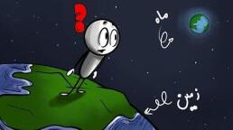

اگر به جای ماه یک سیارهٔ زنده بود چه میشد؟

چه میشد اگر به جای ماه، یک سیاره با قابلیت حیات، همان اندازه، از ابتدای خلقت آنجا میبود؟ یعنی به جای ماه الانمان یک زمین کوچک آنجا میداشتیم. تصور کن امشب به آسمان نگاه میکنی و به جای یک ماه، یک کرهٔ آبیسبز میبینی که ابرهای سفیدش آرامآرام روی سطحش میچرخند. یک دنیای زنده درست بالای سرت، که اگر دوربین قوی داشتی شاید میتوانستی جنگلهایش را ببینی، اقیانوسهایش را تماشا کنی، حتی شاید چراغ شهرهایش را در شب تشخیص بدهی. این همان ماهی است که از اول خلقت با ما بوده، اما این بار زنده است.
همیشه یک طرفش پیداست
اولین چیزی که باید بدانی این است که این سیارهٔ جدید درست مثل ماه فعلی قفل جزر و مدی میشود. یعنی چه؟ یعنی همیشه یک طرفش رو به ماست و یک طرفش همیشه از ما پنهان. شاید بپرسی اصلاً این موضوع چطور ممکن است و چرا پیش میآید؟
زمین و ماه مثل دو رقصندهاند که دست در دست هم میچرخند. نیروی جاذبهٔ زمین روی نزدیکترین و دورترین نقاط ماه متفاوت است. این اختلاف کوچک باعث کشیدگی ماه میشود. مثل یک تخممرغ که کمی کشیده شده. حالا این برآمدگیها میخواهند همیشه رو به زمین باشند، اما ماه دارد میچرخد. نتیجهاش چیست؟ اصطکاک. این برآمدگیها که میخواهند برگردند سمت زمین، انرژی چرخشی ماه را میخورند. طی میلیاردها سال ماه آرامآرام کندتر شد، تا جایی که دیگر نسبت به ما نمیچرخید. دقیقاً یک دور در هر مدار. حالا همیشه یک طرفش رو به ماست.
اما چرا برای زمین این اتفاق نیفتاده؟ دو دلیل دارد. اول، زمین ۸۱ برابر ماه جرم دارد. خیلی سختتر است که متوقفش کنید. دوم، فاصله مهم است. نیروی جزر و مدی با مکعب فاصله کم میشود. ماه آنقدر دور است که نمیتواند زمین را کاملاً قفل کند، فقط کندش میکند. در واقع روزهای زمین هر قرن حدود ۱٫۷ میلیثانیه طولانیتر میشوند.
اینجاست که قضیه جالب میشود. وقتی دو جرم آسمانی به این نزدیکی کنار هم باشند، روی هم اثرهای شگفتانگیزی میگذارند. قمر جدید سکونتپذیر ما، با همان جرم ماه فعلی، همچنان محور چرخش زمین را تثبیت میکند. میدانی اگر ماه نبود، محور زمین ممکن بود تا ۸۵ درجه نوسان کند؟ یعنی قطبها میتوانستند جای استوا را بگیرند. پس این همسایهٔ زندهٔ ما اولین هدیهاش به زمین ثبات است. تازه اگر نمیدانستی، بدان که در تاریخ کرهٔ زمین آن عصرهای یخبندانی که پشت سر گذاشتیم، فقط به خاطر یکی دو درجه نوسان محور زمین بوده. حالا فکر کن اگر ۸۵ درجه نوسان کند چه میشود.
شبی که میشود کتاب خواند
حالا برگردیم به شبهایی که ازشان حرف میزدیم. ماه فعلی فقط حدود ۱۲ درصد نور خورشید را بازتاب میکند. اما این دنیای جدید، با اقیانوسها و ابرهایش، میتواند نور خیلی بیشتری برگرداند. در این سناریو تا ۷۰ درصد. یعنی شبهای ماه کامل آنقدر روشن میشود که میتوانی زیر نورش کتاب بخوانی. اثر این روشنایی روی حیات زمین فوقالعاده است. حیوانهای شبزی باید راه تازهای برای شکار و فرار پیدا کنند و اصلاً جور دیگری تکامل پیدا میکردند. گیاهان هم ممکن است فتوسنتز ملایمی حتی در شب انجام بدهند.
یک لحظه صبر کن. دقت کردی چه گفتم؟ وقتی گیاهان در شب نور بیشتری از این ماه بگیرند، فتوسنتز بیشتری میکنند. و این یعنی چه؟ اکسیژن بیشتر برای زمین خودمان. یعنی سطح اکسیژن زمین به شکل چشمگیری بالا میرود. میدانستی در دورهٔ کربونیفر، حدود ۳۰۰ میلیون سال پیش، اکسیژن جو چقدر بوده؟ حدود ۳۵ درصد. تقریباً ۱٫۷ برابر امروز. و میدانی نتیجهاش چه بود؟ حشرههایی درشت، با بالهایی به پهنای دهها سانتیمتر. حالا تصور کن با فتوسنتز شبانه اکسیژن به ۴۰ یا حتی ۴۵ درصد برسد چه اتفاقی ممکن است بیفتد.
حشرهها از راه نایدیس نفس میکشند و در هوای پراکسیژن میتوانند درشتتر شوند. در این داستان، عنکبوتهایی به اندازهٔ سگهای کوچک هم وسط ماجرا میآیند. اگر از ابتدا به جای ماه فعلی این سیاره را داشتیم، این درشت شدن حتی بیشتر میشد. اما انسانها چه؟ اینجا قضیه پیچیدهتر میشود. مغز ما به اکسیژن خیلی حساس است. زیادیاش هم خطرناک است. احتمالاً انسانهای این دنیا ریههای کوچکتر اما کارآمدتری داشتند. قدشان شاید ۱۰ تا ۱۵ درصد بلندتر میشد، چون استخوان در محیط پراکسیژن محکمتر رشد میکند. و مهمتر از همه، احتمالاً خیلی زودتر از ما آتش را کنترل میکردند، چون در جو پراکسیژن آتش خیلی راحتتر شعلهور میشود.
جزر و مد دو طرفه
ماه جدید فقط روی اکسیژن زمین اثر نمیگذاشت. ماه مسئول جزر و مد زمین هم هست. یادت باشد در اوایل تشکیل منظومه، وقتی زمین و ماه خیلی به هم نزدیک بودند، جزر و مد میتوانست ارتفاع خیلی زیادی داشته باشد. حالا با این قمر زنده همان اتفاق میافتد، اما با یک تفاوت مهم. آن سیاره هم اقیانوس دارد، پس آنجا هم جزر و مدهای عظیم شکل میگرفت. یعنی هر ۱۲ ساعت موجهای بزرگ هم روی زمین و هم روی آن قمر حرکت میکنند. این امواج مواد مغذی را از اعماق اقیانوسها بالا میآورند و ساحلها را شکل میدهند.
فکر میکنی این همه انرژی جزر و مدی چه اثری روی شکلگیری حیات داشته؟ اینجا باید یک موردی را به تو بگویم که ممکن است ندانی. یکی از چیزهایی که در داستان آغاز حیات کنار ساحل زیاد از آن حرف میزنند، همین بالا و پایین رفتن آب است. آن زمانها که جزر و مد شدیدتر بوده، نزدیک ساحل مثل یک همزن بزرگ عمل میکرده و مواد مختلف را با هم قاطی میکرده و همین باعث شده که اولین تک سلولیها بر اثر این مورد به وجود اومدن البته خیلی خلاصه و ساده بیانش کردم. خیلی عاملهای دیگری هم دخیل بودهاند که باز ماه فعلی در آنها دخیل بوده. مثل معتدل کردن دمای زمین و مساعد کردن شرایط بقا.
سنگهایی که حیات را با خود میبرند
از جزر و مد که بگذریم، میرسیم به تبادل حیات بین دو سیاره. بله، تبادل حیات هم امکانپذیر بوده. اینجاست که داستان واقعاً هیجانانگیز میشود. ما میدانیم که سنگهای مریخی روی زمین پیدا شدهاند. سنگهایی که بر اثر برخورد از مریخ کنده شدهاند و به زمین رسیدهاند. حالا تصور کن این اتفاق بین زمین و قمر زندهمان، که خیلی نزدیکترند، چقدر بیشتر رخ میدهد. هر برخورد بزرگ میتواند مقدار زیادی سنگ را به فضا پرتاب کند. بعضی از این سنگها ممکن است میکروب و هاگ مقاوم داشته باشند. در طول میلیاردها سال این دو دنیا مدام در حال تبادل مواد زیستی بودهاند. یعنی چه؟ یعنی حیات روی این دو سیاره احتمالاً ریشهٔ مشترک دارد.
حالا بیا ذهنمان را به چالش بکشیم. تکامل موازی در دو دنیای مجاور چطور بوده؟ در زمین حیات از اقیانوسها شروع شد، به خشکی آمد و بعد از سه و نیم میلیارد سال به پیچیدگی امروز رسید. اما روی آن قمر چه؟ اول از همه بگذار بگویم آن قمر مشکلهایی دارد. جرمش فقط حدود ۱٫۲ درصد زمین است، یعنی گرانشش فقط یکششم ماست. این یعنی نگه داشتن اتمسفر غلیظ برایش سختتر است. اما اگر میدان مغناطیسی قوی داشته باشد، میتواند جو خود را حفظ کند.
موجودات آنجا احتمالاً بلندتر و لاغرترند. در گرانش کم درختها میتوانند تا صدها متر قد بکشند. پرندگان، یا هر چیزی که مثل پرندههای روی زمین باشد، میتوانند با بالهای کوچکتر پرواز کنند. و شاید موجودات هوشمندی که آنجا تکامل پیدا کردهاند زودتر از ما به پرواز فضایی برسند، چون فرار از گرانش سیارهشان حدود ۶ برابر آسانتر است.
با توجه به گرانش کمتر، موجودات هوشمند ممکن است قدی حدود ۳ تا ۴ متر داشته باشند. استخوانهایشان لاغرتر اما بلندتر، و عضلاتشان به نسبت ضعیفتر، چون نیازی به قدرت زیاد ندارند. اما انعطاف و چابکیشان بیشتر است. تصور کن موجوداتی که میتوانند چند متر به راحتی بپرند، یا از ارتفاع زیاد نرمتر فرود بیایند.
حالا اگر یک انسان زمینی با وزن ۷۰ کیلو به آن سیاره برود، یکهو احساس میکند فقط حدود ۱۲ کیلو وزن دارد. و چون عضلاتش برای زمین طراحی شده، آنجا فوقالعاده قدرتمند به نظر میرسد. یعنی میتواند خیلی بلندتر بپرد و جسم سنگینتری بلند کند. رسماً در آن سیاره برای خودش یک قهرمان حساب میشود.
حالا برعکسش چه؟ یعنی یک موجود ۳ متری از آن سیاره که به زمین بیاید. ناگهان احساس میکند حدود ۶ برابر سنگینتر شده. استخوان ظریفش ممکن است زیر این فشار تاب نیاورد. قلبش که برای پمپاژ خون در گرانش کم طراحی شده، نمیتواند راحت با این فشار کنار بیاید. احتمالاً بعد از مدتی دچار مشکل جدی میشود.
دو تمدن، سه روز راه
تصور کن هر دو دنیا به طور مستقل تمدن هوشمند پرورش دادهاند. ما اینجا روی زمین هر شب به آن دنیای آبیسبز خیره میشویم و تلسکوپهایمان را به سمتش میچرخانیم. آنها هم همین کار را میکنند، با این تفاوت که زمین در آسمانشان حدود ۳٫۷ برابر بزرگتر از ماه در آسمان ماست. فاصلهٔ بین ما فقط ۳۸۴ هزار کیلومتر است. یعنی کلاً به اندازهٔ حدود ۱۰ دور زمین. اگر با ماشین بخواهی با سرعت ثابت ۱۰۰ کیلومتر بروی، حدود ۱۶۰ روز طول میکشد برسی. البته با فناوری فعلی موشک، سفر بین این دو دنیا فقط حدود ۳ روز طول میکشد. حالا این را مقایسه کن با ماهها سفر به مریخ. یعنی تبادل فرهنگی، تجاری و علمی بین دو تمدن از همان اوایل عصر فضا امکانپذیر است.
البته باید در نظر داشت که آنها زودتر به هوشمندی سطح الان میرسند یا ما. این دیگر میرود در بحث احتمال. اما اگر به جای ماه یک همسایهٔ زنده میداشتیم، آسمان شب فقط یک چراغ نبود. یک دنیای دیگر بود، آنقدر نزدیک که بشود دیدش، حرفش را زد، و شاید یک روز هم به دیدنش رفت. تا فکر بعدی، کنجکاو بمان.